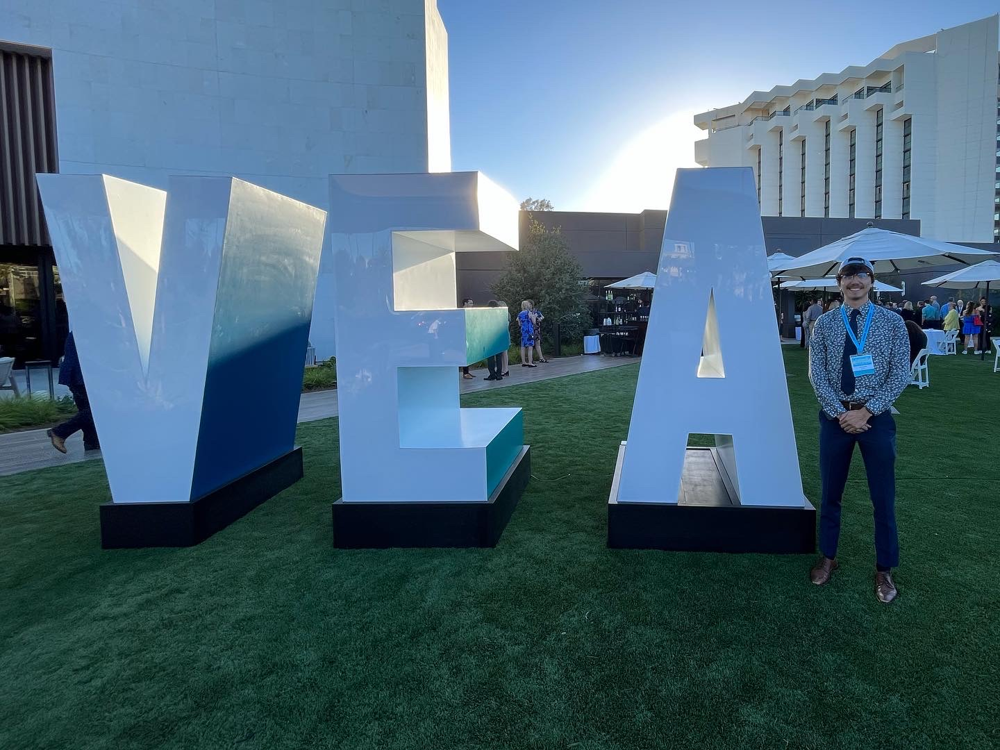
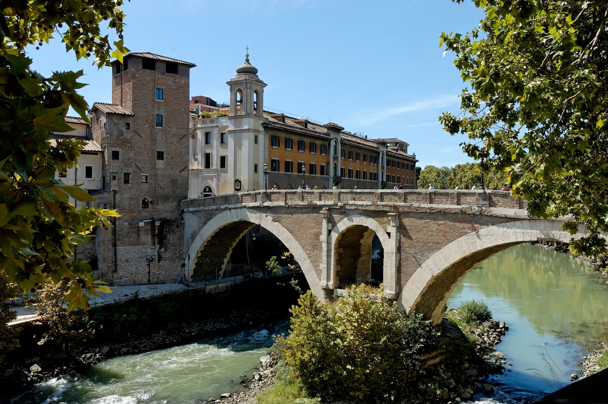

🛫 Praxis
All-experience blog
Post-Graduation in Brazil
January 28 2023 - 🇧🇷 Rio de Janeiro & São Paulo, BrazilAfter graduating with my masters, my partner and I set out on a two-week trip to Brazil. Why Brazil? Because we wanted to be challenged. We didn’t want a vacation, we wanted an adventure—and an adventure we surely got.

First NSA Conference
June 30 2022 - 🌴 New Port Beach, CAMy stutter is a gift. That’s right, the thing that adds extra s-s-syllables to my speech and makes words a little harder to say… its a gift. Why? Because it has challenged me; it has led me to the most amazing people; it has opened my eyes to a brave and supportive community; and it has fundamentally changed how I answer the question: what is a voice? My voice is my stutter, and my stutter is my voice.


Study Abroad Part One
February 2 2020 - 🇮🇹 Rome, ItalyArriving; Sedimentary; Campaign Bridges; Cobblestone Voices; Rome Ripped my Jeans